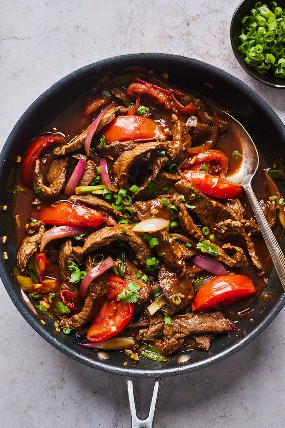

Recipes
Chicken Karahi
Origin: Pakistan
Source: Family Recipe
Category: Main Dish

Chicken curry, or Chicken Karahi as it's commonly known in Pakistani households, holds a special place as the ultimate comfort food. This staple dish is not only perfect for a quick last-minute meal but can also be elevated for a more lavish dinner party. The simplicity of its preparation using everyday ingredients, combined with a rich blend of aromatics, results in a delightful burst of flavor that is sure to please the taste buds.
Recipe Ingredients
- 4 Roma Tomatoes
- 2 tbsp Ginger Garlic paste
- Ghee (As needed, or oil for a lighter version)
- 500g bone-in chicken
- 2 green chilies, julienned (For garnish)
- Fresh ginger, julienned (For garnish)
- 1 tsp Kashmiri red chili powder
- 1 tsp garam masala
- 1 tsp salt
- 2 tbsp cilantro, roughly chopped
Recipe Steps
- Dice the Roma tomatoes.
- In a small bowl, mix ginger garlic paste.
- In a large bowl, combine the chicken pieces with ginger garlic paste, Kashmiri red chili powder, garam masala, and salt.
- Let the chicken marinate for at least 30 minutes to allow the flavors to infuse.
- In a pan or kadai, heat ghee (or oil) over medium heat.
- Add the marinated chicken and cook until it gets a golden brown color.
- Add diced Roma tomatoes to the chicken. Cook until the tomatoes are soft and the mixture thickens.
- Reduce the heat and let the chicken simmer in the tomato base, absorbing the flavors.
- Adjust salt and spice levels according to your taste preferences.
- Once the chicken is cooked through and the curry reaches the desired consistency, turn off the heat.
- Garnish with julienned green chilies, fresh ginger, and roughly chopped cilantro.
- Drizzle with a bit more ghee for added richness if desired.
- Serve the Chicken Curry hot with steamed rice, naan, or roti.
Photo Gallery


Double Chocolate Chip Cookies
Origin: Michigan
Source: Family Recipe
Category: Dessert

My daughter learned to make these cookies at a baking camp at Zingermanns and has tweaked the recipe to fit the taste buds of her siblings. They are extremely sugary so the salt helps to balance it. Note, these cookies are best eaten very quickly.
Recipe Ingredients
- 1 cup butter
- 1 cup sugar
- 1 cup brown sugar
- 2 eggs
- 1 tsp vanilla
- 2 cups flour
- 1 tsp baking soda
- 1 tsp salt
- 1 cup chocolate chips
- 1 cup white chocolate chips
Recipe Steps
- Preheat oven to 350 degrees.
- Cream butter and sugars together.
- Add eggs and vanilla.
- Mix in flour, baking soda, and salt.
- Add chocolate chips.
- Drop by spoonfuls onto cookie sheet.
- Bake for 10-12 minutes.
Photo Gallery
Lomo Saltado
Origin: Peru
Category: Main Dish
Lomo Saltado is a beloved Peruvian dish that beautifully showcases the fusion of Asian and Latin culinary influences. This hearty and flavorful meal has become a staple in Peruvian cuisine, offering a unique blend of tastes and textures that captivate the palate. Beyond its delicious flavors, Lomo Saltado holds cultural significance in Peru, representing the country's rich history of culinary fusion. The dish reflects the diverse influences that have shaped Peruvian cuisine over the years.
Recipe Ingredients
- 2 tablespoons vegetable oil, divided
- 1 lb sirloin steak, cut into strips
- Salt, to taste
- Black pepper, to taste
- ½ red onion, sliced
- 1 medium tomato, sliced
- 2 cloves garlic, minced
- 1 tablespoon aji amarillo paste
- 2 tablespoons soy sauce
- 1 tablespoon white vinegar
- 1 tablespoon fresh cilantro, chopped
- 1 lb french fries, cooked, hot
- White rice, cooked, for serving (optional)
Recipe Steps
- Heat 1 tablespoon of oil in a large pan over high heat. Add the steak, season with salt and pepper, and cook until browned, 5-6 minutes. Remove from the pan.
- Heat the remaining tablespoon of oil in the same pan, then add the red onion and cook for about 5 minutes, until softened and browned. Add the tomato, garlic, and aji amarillo paste, and cook for another 5-7 minutes, until the tomatoes have released some of their juices, but are still intact.
- Add the soy sauce and vinegar and stir to combine, let cook for 1 minute.
- Add the steak, fries, and cilantro. Toss gently to coat the fries in the sauce.
- Serve with rice, if desired.
- Enjoy!